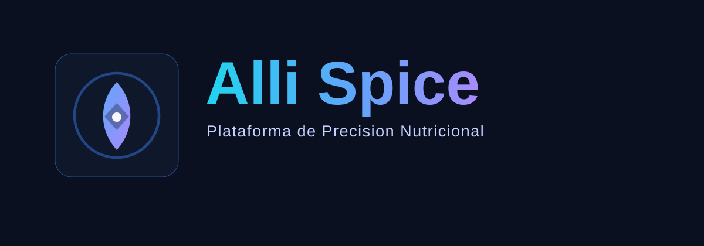

Datos, clÃnicos, dieta, entorno, fÃsico y soporte final en una sola estructura.

Plataforma estructurada para nutriólogos
Menos improvisación. Más estructura, mejor criterio y más presencia profesional.
Alli Spice reúne historia, antropometrÃa, distribución dietética, constructor de dieta, biblioteca interna, foro profesional y control de acceso en una sola herramienta pensada para consulta real y trabajo estructurado.
Plataforma en evolución continua para consulta nutricional estructurada.
Consulta estructurada
Constructor dietético con apoyo visual y biblioteca reutilizable.
Espacio para aprendizaje, dudas, referencias y crecimiento entre colegas.
Lo que cambia en tu consulta
- Menos tiempo recordando todo de memoria.
- Más seguridad al entrevistar y explicar.
- Mejor coherencia entre estructura y tratamiento.
- Una experiencia más seria frente al paciente.
Experiencia visual
Una plataforma pensada para verse seria, clara y profesional en consulta

Vista general del programa
Diseño integral para consulta con navegación estructurada, expediente activo y módulos conectados.

AntropometrÃa
Ãrea con mediciones básicas, tabla avanzada y vista antropométrica 3D para enriquecer la exploración.

Cálculo dietético
Selección de fórmulas, panorama sugerido y base cuantitativa para planear con mayor precisión.

Distribución dietética
Una de las áreas más fuertes del sistema, pensada para traducir cálculo en decisiones aplicables.

Tratamiento adicional
Espacio para terapia, fármacos, suplementos y ejercicio con visión profesional complementaria.

Tratamiento nutricio
Constructor dietético práctico para consulta, seguimiento y futura biblioteca colaborativa.

Expedientes y nube
Gestión de expedientes con proyección a sincronización privada por usuario y continuidad entre dispositivos.

Navegación y captura estructurada
Menú lateral claro y acceso rápido a cuestionarios, secciones clave y flujo ordenado de consulta.
Módulos clave
Diseñado para consulta real, no para capturar datos por capturarlos
Historia profunda
Integra antecedentes, entorno, hábitos, cuestionario dietético y hallazgos fÃsicos con una lógica profesional usable.
Distribución dietética inteligente
Conecta GET, distribución de raciones, tiempos de comida y tratamiento nutricional en una sola lÃnea de trabajo.
Dietas manuales y predefinidas
Permite construir planes desde cero o reutilizar estructuras y ejemplos para acelerar la entrega al paciente.
Biblioteca, investigación y foro
Incluye espacio para documentos internos, trabajo académico, comunidad profesional y expansión futura.
Empresa y propósito
Una propuesta pensada para elevar la práctica nutricional con estructura, criterio y respeto por la información
Misión
Facilitar una consulta nutricional más sólida, profesional y humana mediante herramientas estructuradas que ayuden a ordenar información y tomar mejores decisiones.
Visión
Construir una plataforma de referencia en nutrición profesional, capaz de crecer desde la consulta privada hasta investigación, seguimiento y trabajo colaborativo.
Valores
Ética profesional, claridad, respeto por el paciente, mejora continua, criterio técnico y acceso más democrático a herramientas de alto nivel.
Marco informativo y derechos
Alli Spice se desarrolla con enfoque de confidencialidad, propiedad intelectual y buenas prácticas para el tratamiento responsable de información sensible.
- Respeto a derechos de autor sobre software, materiales y contenido.
- Protección de información sensible y expedientes por usuario.
- Enfoque alineado con privacidad, trazabilidad y control de acceso.
Términos y protección legal
Una base clara para proteger al proyecto, al profesional y a la información del paciente
Aceptación obligatoria al registrarse
Todo usuario nuevo debe leer y aceptar los términos y condiciones antes de crear una cuenta.
Uso como herramienta de apoyo
La plataforma ayuda a estructurar la práctica profesional, pero no sustituye el criterio del nutriólogo.
Confidencialidad y resguardo
Cada profesional es responsable del manejo adecuado de expedientes, archivos y servicios de nube conectados.
Documento completo
Ya existe una versión legal base que cubre acceso, uso responsable, foro, privacidad, propiedad intelectual y revocación de acceso.
Flujo de trabajo
Asà se siente una consulta con Alli Spice
Exploras al paciente
Recabas datos, dieta, entorno y observación fÃsica sin perder el hilo de la entrevista.
Traducimos hallazgos a decisiones
La plataforma conecta antecedentes, fármacos, recomendaciones y estructura dietética sugerida.
Construyes tratamiento
Eliges una dieta manual o predefinida, ajustas por objetivo y dejas todo listo para seguimiento.
Planes y suscripciones
Modalidades pensadas para adaptarse al ritmo de cada profesional
Prueba profesional
Ideal para conocer la plataforma por periodos controlados, demostraciones, prácticas y validación inicial del flujo de trabajo.
- Activación mediante llave temporal
- Útil para pruebas por horas o dÃas
- Enfoque de evaluación y adopción
Plan mensual
Pensado para consulta privada, seguimiento profesional y uso continuo del sistema como herramienta principal de apoyo.
- Acceso continuo a la plataforma
- Base ideal para consulta diaria
- Preparado para crecimiento funcional
Plan anual
Orientado a profesionales que buscan estabilidad, continuidad operativa y una adopción más completa dentro de su práctica.
- Visión de uso a largo plazo
- Mayor proyección de organización profesional
- Escenario ideal para consolidación
Precios oficiales próximamente
Próximamente se publicarán modalidades oficiales, alcances y lineamientos de activación.
Descarga
Empieza con la beta y acompaña la evolución del sistema
Alli Spice se encuentra actualmente en fase beta, crecimiento, desarrollo y testeo profesional. La rama pública actual seguirá evolucionando con nuevas funciones, foro profesional, mejoras visuales, mayor robustez operativa y una nueva etapa 0.5 lista para descarga.
Archivo actual: AlliSpice_Beta_0_5_Setup.exe
El registro y uso de la plataforma implican aceptación de términos y condiciones.
Contacto
Canal de atención y vinculación profesional
Para información general, acceso, colaboración o seguimiento comercial, ya puedes comunicarte al correo oficial del proyecto.
Correo oficial
alli.spice.nutricion@gmail.com